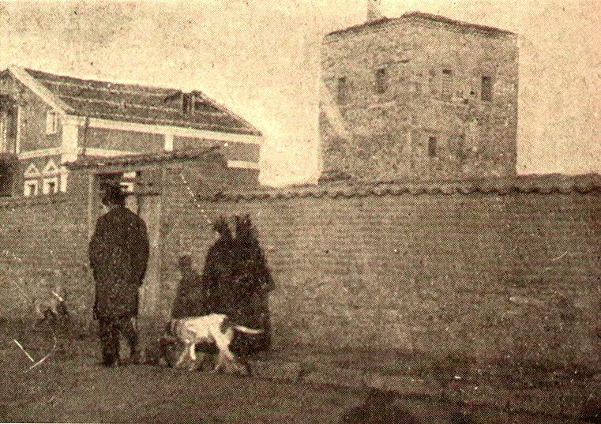
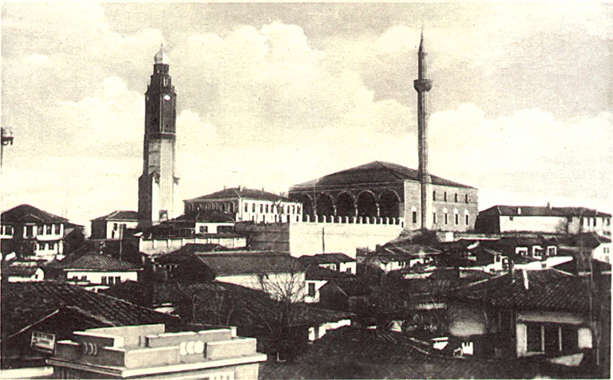

Περιγραφή
Το Τζαμί Μπουρμαλί, φωτογραφημένο γύρω στα μέσα του 19ου αιώνα. Το μοναδικό τζαμί στη δεξιά όχθη του Βαρδάρη. Βρισκόταν ακριβώς δίπλα στην Πέτρινη γέφυρα. Πήρε το όνομά του από τον σπειροειδή (μπουρμαλί) κορμό του μιναρέ του. Χτίστηκε στα τέλη του 15ου αιώνα και κατεδαφίστηκε το 1925, για να χτιστεί στη θέση του η Λέσχη Αξιωματικών.

Το Τζαμί Μπουρμαλί και μερικά κτίρια γύρω του. Ένας ακόμη αδιαμόρφωτος δρόμος. Τόπος συγκέντρωσης αγωγιατών εμπορευμάτων με βοϊδάμαξες. - τέλη του 19ου αιώνα

Το Τζαμί Μπουρμαλί - 1912 - 1918. Η νότια πρόσβαση στην Πέτρινη γέφυρα με πυκνά παραταγμένα εμπορικά και βιοτεχνικά μαγαζιά.

Το Τζαμί Μπουρμαλί με τμήμα της Πέτρινης γέφυρας και τον περίπατο δίπλα του. Αριστερά του φαίνονται τα κτίρια που είχαν χτιστεί ακριβώς στην είσοδο της Πέτρινης γέφυρας, όπου υπήρχαν μαγαζιά και τεχνίτες. - Δεκαετία του 1910.

Το Τζαμί Μπουρμαλί - αρχές της δεκαετίας του 1920. Μπροστά στη γέφυρα διακρίνονται τα πρώτα περίπτερα για εξυπηρέτηση και πώληση. Τα περίπτερα έχουν τονισμένη αρχιτεκτονική στις λεπτομέρειες, δηλαδή στη διαμόρφωση των στεγών.

Τζαμί Μπουρμαλί - 1920.

Το Τζαμί Χατουντζούκ με το τουρμπέ. Στο βάθος φαίνεται ο μιναρές του Τζαμιού του Γιαχιά Πασά. Το Τζαμί Χατουντζούκ χρονολογείται από το 1511. Το έχτισε η Χανί Χατούν, μία από τις κόρες του Γιαχιά Πασά. Το όνομα του τζαμιού, Χατουντζούκ, σημαίνει μικρή κυρία (κυρά) ή δεσποινίδα. - τέλη του 19ου αιώνα.

Το Τζαμί του Χατζή Μπαλαμπάν. Βρίσκεται ανάμεσα στο Κουρσουμλί Χαν και το Τζαμί Ντουκαντζίκ. Χτίστηκε τον 15ο αιώνα. (τέλη του 19ου αιώνα)

Ο Πύργος του Μπέη (ή φεουδαρχικός πύργος). Ο πύργος αυτός ανήκε σε κάποιον μπέη. Βρίσκεται μπροστά στην κύρια είσοδο του σημερινού Οίκου του Στρατού της Δ. Μακεδονίας. Η εποχή ανέγερσής του είναι άγνωστη, αλλά υποτίθεται ότι χτίστηκε στα τέλη του 17ου ή στις αρχές του 18ου αιώνα. Η φωτογραφία είναι του 19ου αιώνα.

Ο Πύργος του Μπέη στα τέλη του 19ου αιώνα.

Ο Πύργος του Μπέη στις αρχές του 20ού αιώνα.

Ο Πύργος του Μπέη, Δεκαετία του 1910.

Το παλιό Τζαμί Καζαντζιλέρ, πολύ κοντά στο Κουρσουμλί Χαν. Χτίστηκε τον 15ο αιώνα και ήταν γνωστό ως τζαμί των χαλκωματάδων. (δεν σώζεται σήμερα)

Τζαμί Ντουκαντζίκ, χτισμένο στα μέσα του 16ου αιώνα.

Το Κουρσουμλί Χαν, χτισμένο στα μέσα του 16ου αιώνα. Αποτελεί μνημειακό κτίσμα της ισλαμικής κοσμικής αρχιτεκτονικής. Βρίσκεται στην παλιά αγορά των Σκοπίων, ακριβώς δίπλα στο σημερινό Μουσείο της Μακεδονίας.

Ο Πύργος του Ρολογιού και το Τζαμί του Σουλτάνου Μουράτ - Δεκαετία του 1920. Ο Πύργος του Ρολογιού χτίστηκε στα μέσα του 16ου αιώνα (1566-1572), ως ο πρώτος πύργος ρολογιού του Οθωμανικού κράτους. Ο μηχανισμός του ρολογιού και ο τεχνίτης που θα τον φρόντιζε μεταφέρθηκαν από το Σίγκετ της Ουγγαρίας, μετά την κατάληψη της πόλης Σίγκετ από τους Τούρκους. Το Τζαμί του Σουλτάνου Μουράτ: ο σουλτάνος Μουράτ Β΄, πατέρας του σουλτάνου Μωάμεθ του Πορθητή, έχτισε αυτό το τζαμί το 1436 ως ευαγές ίδρυμα.

Τζαμί του Σουλτάνου Μουράτ, Δεκαετία του 1910.

Πύργος του Ρολογιού και Τζαμί του Σουλτάνου Μουράτ - Δεκαετία του 1920.

Πύργος του Ρολογιού και Τζαμί του Σουλτάνου Μουράτ - Δεκαετία του 1920.

Πύργος του Ρολογιού και Τζαμί του Σουλτάνου Μουράτ - Δεκαετία του 1920.

Πύργος του Ρολογιού και Τζαμί του Σουλτάνου Μουράτ - Δεκαετία του 1920.

Το Τζαμί του Γαζή Ισά Μπέη - Δεκαετία του 1920. Το έχτισε ο Ισά Μπέης, γιος του Ισχάκ Μπέη, μετά τον θάνατο του πατέρα του ως ευαγές ίδρυμα. (15ος αιώνας)

Το Τζαμί του Γαζή Ισά Μπέη - Δεκαετία του 1920. Το έχτισε ο Ισά Μπέης, γιος του Ισχάκ Μπέη, μετά τον θάνατο του πατέρα του ως ευαγές ίδρυμα. (15ος αιώνας)

Το Τζαμί του Γαζή Ισά Μπέη - Δεκαετία του 1920. Το έχτισε ο Ισά Μπέης, γιος του Ισχάκ Μπέη, μετά τον θάνατο του πατέρα του ως ευαγές ίδρυμα. (15ος αιώνας)

Τζαμί του Γαζή Ισά Μπέη - Δεκαετία του 1920.

Το τουρκικό νεκροταφείο, και στο βάθος το Τζαμί του Γαζή Ισά Μπέη - Δεκαετία του 1920.

Τζαμί του Γαζή Ισά Μπέη - η αυλή - Δεκαετία του 1920.

Τζαμί του Γαζή Ισά Μπέη - η αυλή - Δεκαετία του 1920.

Το Τζαμί του Μουσταφά Πασά - Δεκαετία του 1920. Χτίστηκε το 1492 από τον τότε διοικητή Μουσταφά Πασά.

Το Τζαμί του Μουσταφά Πασά - Δεκαετία του 1920. Χτίστηκε το 1492 από τον τότε διοικητή Μουσταφά Πασά.

Τζαμί του Μουσταφά Πασά - Δεκαετία του 1920.

Το Τζαμί του Μουσταφά Πασά στο βάθος, και από κάτω φαίνεται εν μέρει το Τζαμί του Πασά Γιγίτ Μπέη, το παλαιότερο τζαμί των Σκοπίων. (δεν σώζεται σήμερα) - Δεκαετία του 1920.

Δρόμος στο παλιό τμήμα της πόλης, και στο βάθος το Τζαμί του Ισχάκ Μπέη ή Τζαμί Αλατζά. Αυτό το τζαμί το έχτισε ο διοικητής των Σκοπίων Ισχάκ Μπέης (γιος του Πασά Γιγίτ Μπέη - του κατακτητή των Σκοπίων), στο πρώτο μισό του 15ου αιώνα, το 1438. Δίπλα στο τζαμί, ως ευαγές ίδρυμα, έχτισε επίσης τουρμπέ, μεντρεσέ, κονάκια και κτίρια της ισλαμικής κοσμικής αρχιτεκτονικής. Το 1519 το τζαμί ανακαινίστηκε και προστέθηκαν τα δύο πλευρικά κλίτη από τον Μεχμέτ, εγγονό του Ισχάκ Μπέη - Δεκαετία του 1920.
Προσανατολισμός

Στον παλιό χάρτη προσανατολισμού
Φωτογραφικό άλμπουμ


Θέμα
 Υδραγωγείο4 καρτ-ποστάλ
Υδραγωγείο4 καρτ-ποστάλ Καλέ30 καρτ-ποστάλ
Καλέ30 καρτ-ποστάλ Γέφυρες60 καρτ-ποστάλ
Γέφυρες60 καρτ-ποστάλ Προκυμαία58 καρτ-ποστάλ
Προκυμαία58 καρτ-ποστάλ Πλατεία46 καρτ-ποστάλ
Πλατεία46 καρτ-ποστάλ Κτίρια66 καρτ-ποστάλ
Κτίρια66 καρτ-ποστάλ Χριστιανικοί ναοί19 καρτ-ποστάλ
Χριστιανικοί ναοί19 καρτ-ποστάλ Μουσουλμανικά κτίρια33 καρτ-ποστάλ
Μουσουλμανικά κτίρια33 καρτ-ποστάλ Λέσχη Αξιωματικών29 καρτ-ποστάλ
Λέσχη Αξιωματικών29 καρτ-ποστάλ Θέατρο28 καρτ-ποστάλ
Θέατρο28 καρτ-ποστάλ Σιδηροδρομικός σταθμός13 καρτ-ποστάλ
Σιδηροδρομικός σταθμός13 καρτ-ποστάλ Σχολεία36 καρτ-ποστάλ
Σχολεία36 καρτ-ποστάλ Πάρκα12 καρτ-ποστάλ
Πάρκα12 καρτ-ποστάλ Αγορές18 καρτ-ποστάλ
Αγορές18 καρτ-ποστάλ Δρόμοι38 καρτ-ποστάλ
Δρόμοι38 καρτ-ποστάλ Πανόραμα I60 καρτ-ποστάλ
Πανόραμα I60 καρτ-ποστάλ Πανόραμα II30 καρτ-ποστάλ
Πανόραμα II30 καρτ-ποστάλ Κολάζ55 καρτ-ποστάλ
Κολάζ55 καρτ-ποστάλ Πλημμύρες9 καρτ-ποστάλ
Πλημμύρες9 καρτ-ποστάλ Σεισμός27 καρτ-ποστάλ
Σεισμός27 καρτ-ποστάλ Σκόπια 200026 καρτ-ποστάλ
Σκόπια 200026 καρτ-ποστάλ